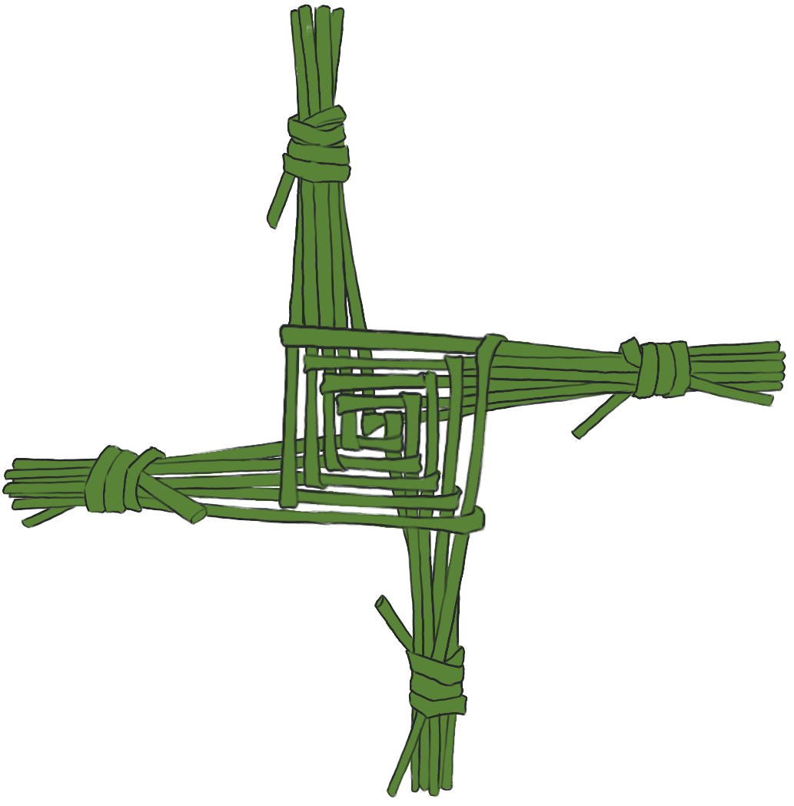

Brigid's Labyrinth
Brigid’s Labyrinth is a choose-your-own-adventure text-based game I created for my undergraduate capstone project. It was made with Twine and includes up to twentyish minutes of playtime (depending on your reading speed). The user is inserted into a narrative and told to navigate a labyrinth that will teach them about the Celtic mythological figure, Brigid. The player is an agent in their learning and is asked to take an active role in picking the information they receive.
Click here to enter Brigid's Labyrinth!
While researching Brigid, I came to understand that to define her or ignore her ability to adapt and exist in multiple places simultaneously is to deny her agency. If you chose to see her as one thing and ignore the rest, you are doing a disservice to her narrative existence. She is an amalgamation of many stories that exist in a range of contexts. We must try to tell every part of her story and put the confusion surrounding her at the forefront. We should not silence and brush her aside because she is too complicated. My project does not capture everything about Brigid. There are pieces of her story not present, not because of my disinterest but because of the scope of this work. My goal wasn't to say everything I could about Brigid; it was to challenge the user to think about the stories they value and why they value them. I hope Brigid's Labyrinth does this for you.